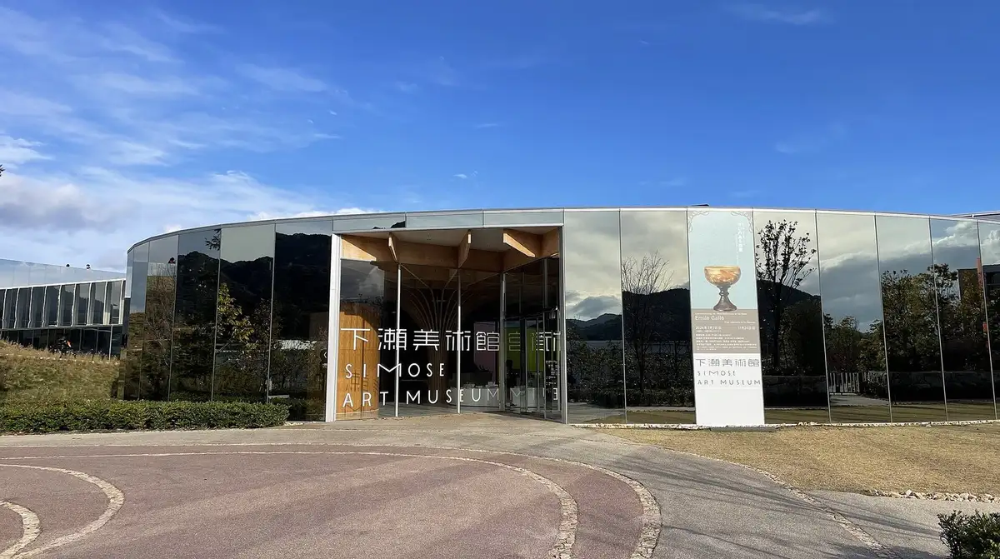
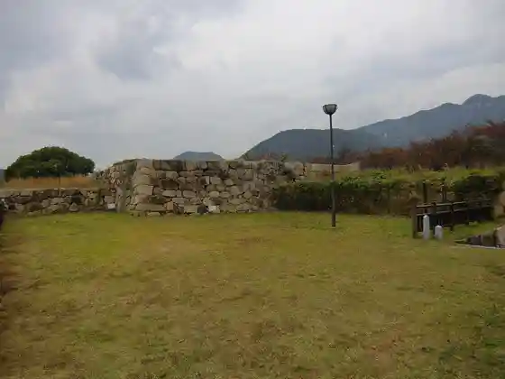
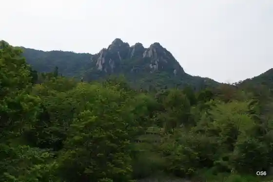

Otake
Otake · Hiroshima
Otake
Highlighted on the Hiroshima map.

Stay
San Hotel Otake
Bijinesu Hotel Masuya
Simose Art Garden Villa
Puraibetosauna Azami Garden Otake ^
Dining
SIMOSE French Restaurant
Izakaya Isshin
Kafe & Fudo Sanhitori
Purasuguddodei
no YAKI
Dondon Yume Taun Otake Mise
Banshaku Ie KIKU
Xin Wang
Taisho Kitchin
O Shokuji Tokoro
Otake Baru Gaku
Bari Otake Minami Sakae Mise
Les gouters gaku
Sachi no Tane
Konishi O Konomi Yaki Mise
Usa Ki
Onsen
San Hotel Otake Sento (Noboru Koi Yu)
Bijinesu Hotel Masuya Danseisenyo Kyodo Furo
Puraibetosauna Azami Garden Otake ^ Furo
Sights
Kame Kyo Park

Otake Eki
Shimose Art Museum
Mikura Gaku

Ata Tajima